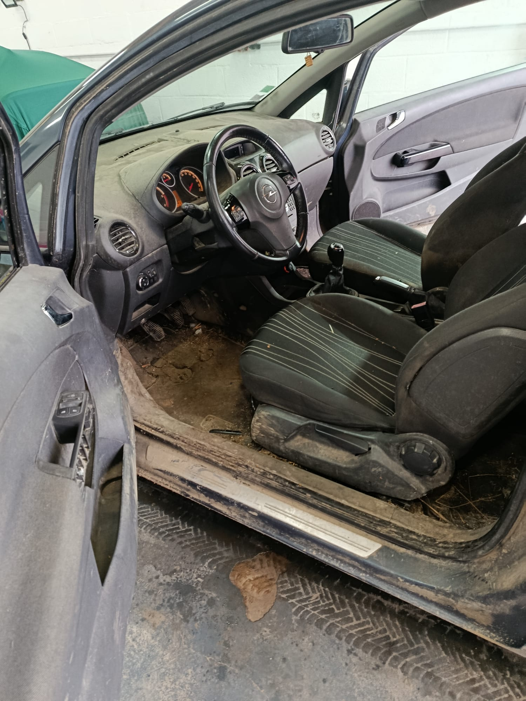
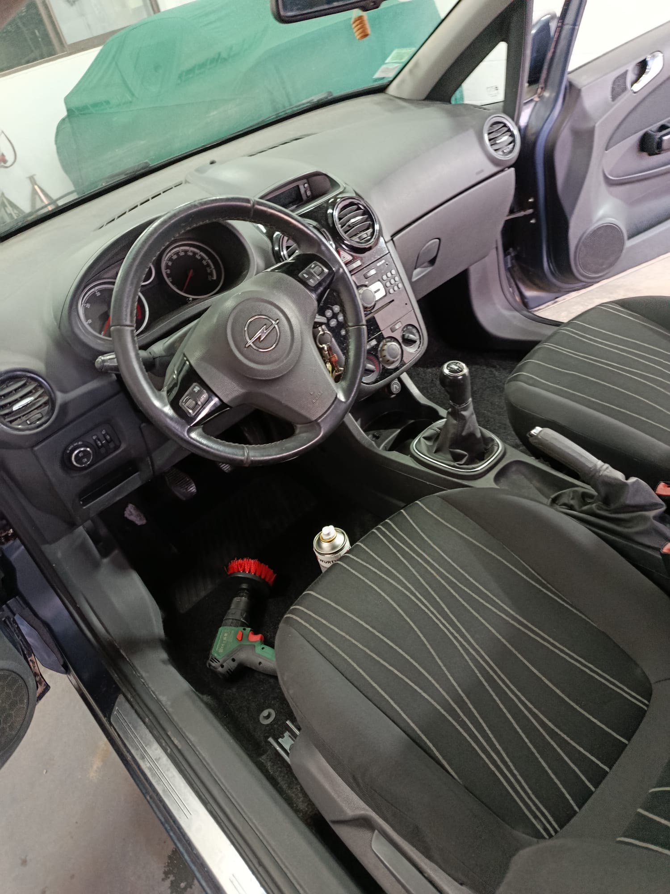
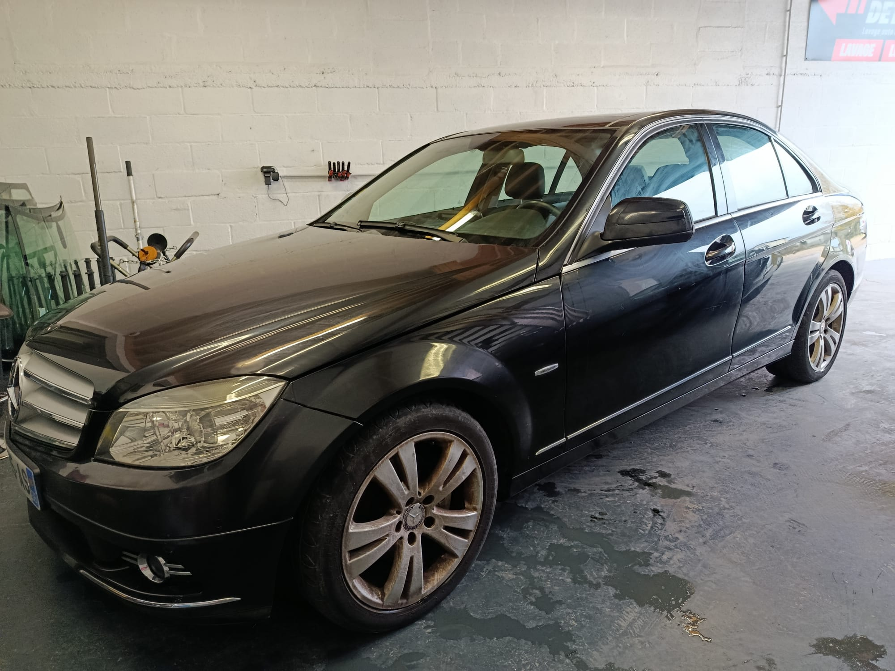
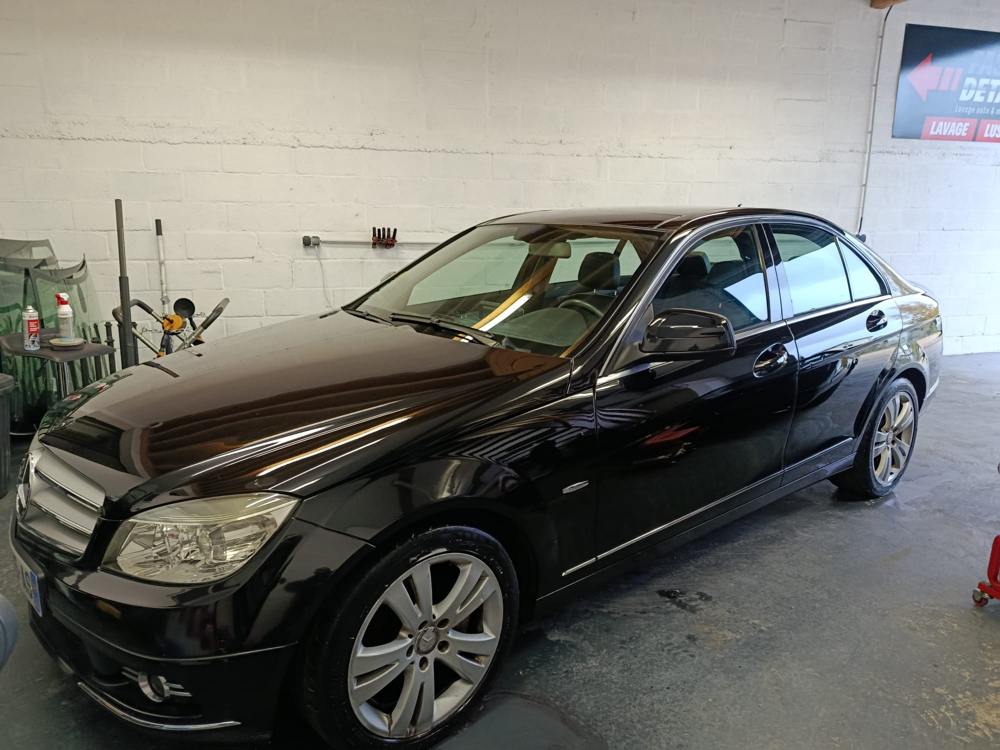
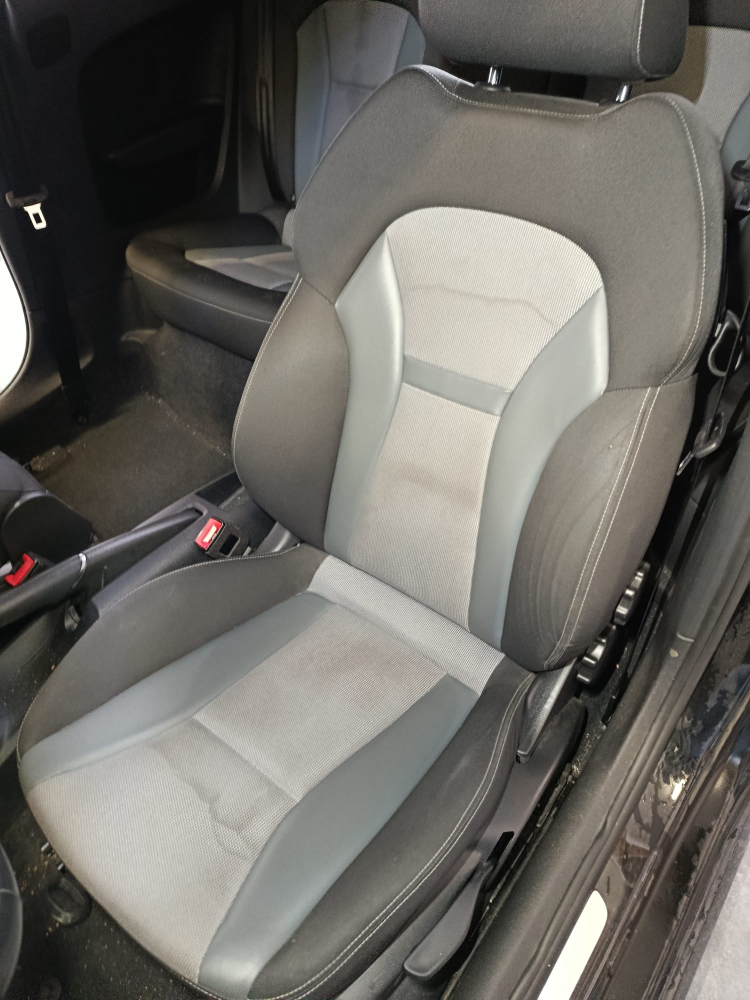
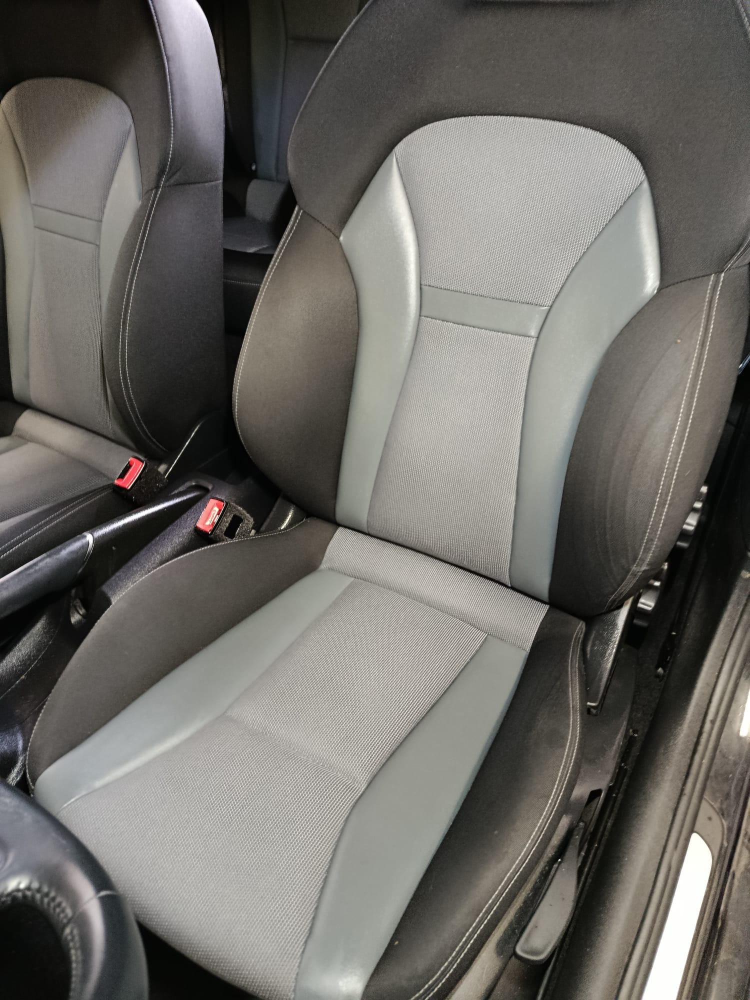
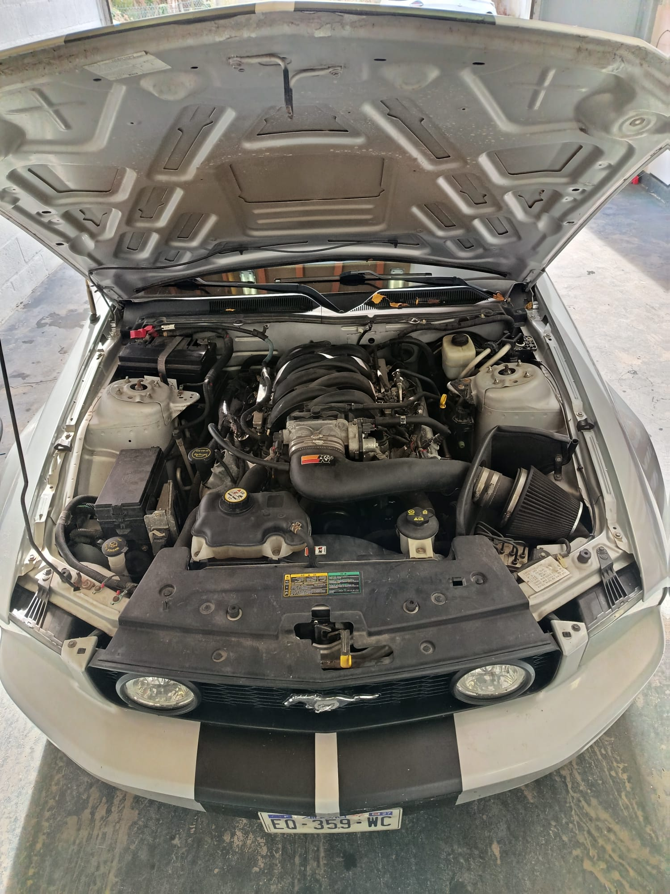
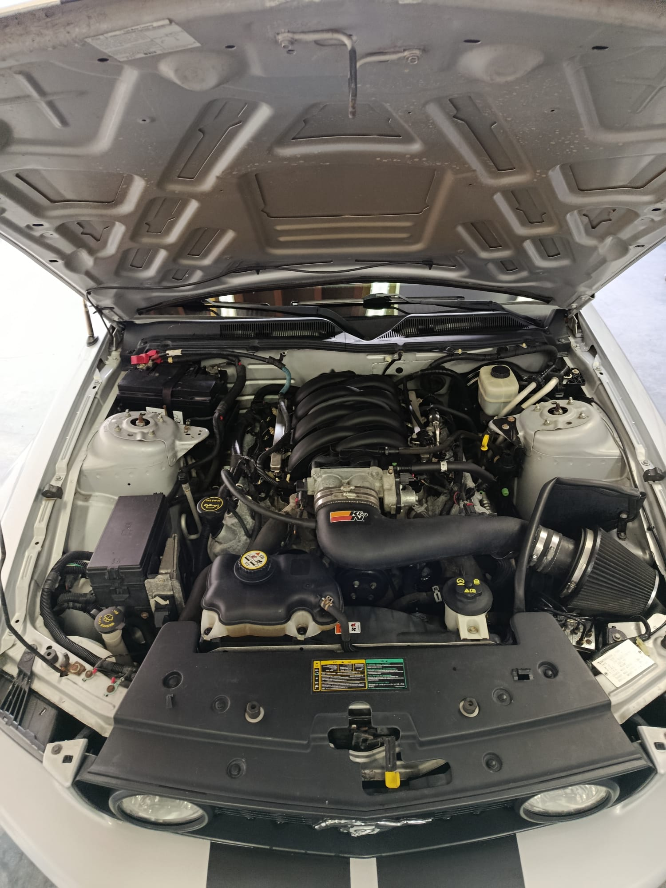

Avant
Après
Intérieur voiture
Habitacle complet nettoyé: tableau de bord, plastiques, sol et poste de conduite retrouvent un rendu propre et soigné.
Avant / Après
Le comparatif avant/après est la meilleure preuve de qualité pour le detailing. Cette page sert à montrer les résultats sur l’intérieur, les phares, l’extérieur et la moto.

Comparatifs
Affichage avant/après en côte à côte pour lire clairement le résultat, même quand les cadrages ne sont pas strictement identiques.


Habitacle complet nettoyé: tableau de bord, plastiques, sol et poste de conduite retrouvent un rendu propre et soigné.


Phare très terni restauré avec un résultat net, plus transparent et plus valorisant visuellement.


Carrosserie ravivée avec une brillance plus nette et une finition visiblement plus propre sur l'ensemble du véhicule.


Rénovation textile et nettoyage en profondeur pour retrouver des assises nettes et uniformes.


Nettoyage détaillé du compartiment moteur pour un rendu propre, net et valorisant à l'ouverture du capot.